Chapter 7 revisits learning from a perspective that is different from Chapter 5. In Chapter 5 we have introduced the concept of overfitting and the use of cross-validation as a safeguard mechanism to help us build models that don’t overfit the data. It focused on fair evaluation of the performances of a specific model. Chapter 7, taking on a process-oriented view of the issue of overfitting, focuses on performances of a learning algorithm167 Algorithms are computational procedures that learn models from data. They are processes.. This chapter introduces two methods that aim to build a safeguard mechanism into the learning algorithms themselves. The two methods are the Support Vector Machine (SVM) and Ensemble Learning168 The random forest model is a typical example of ensemble learning. While all models could overfit a dataset, these methods aim to reduce risk of overfitting based on their unique modeling principles.
In short, Chapter 5 introduced evaluative methods that concern if a model has learned from the data. It is about quality assessment. Chapter 7 introduces learning methods that concern how to learn better from the data. It is about quality improvement.
A learning algorithm has an objective function and sometimes a set of constraints. The objective function corresponds to a quality of the learned model that could help it succeed on the unseen testing data. Eqs. (16), (28), and (40), are examples of objective functions. They are developed based on the likelihood principle. Besides the likelihood principle, researchers have been studying what else quality a model should have and what objective function we should optimize to enhance this quality of the model. The constraints, on the other hand, guard the bottom line: the learned model needs to at least perform well on the training data so it is possible to perform well on future unseen data169 The testing data, while unseen, is assumed to be statistically the same as the training data. This is a basic assumption in machine learning..
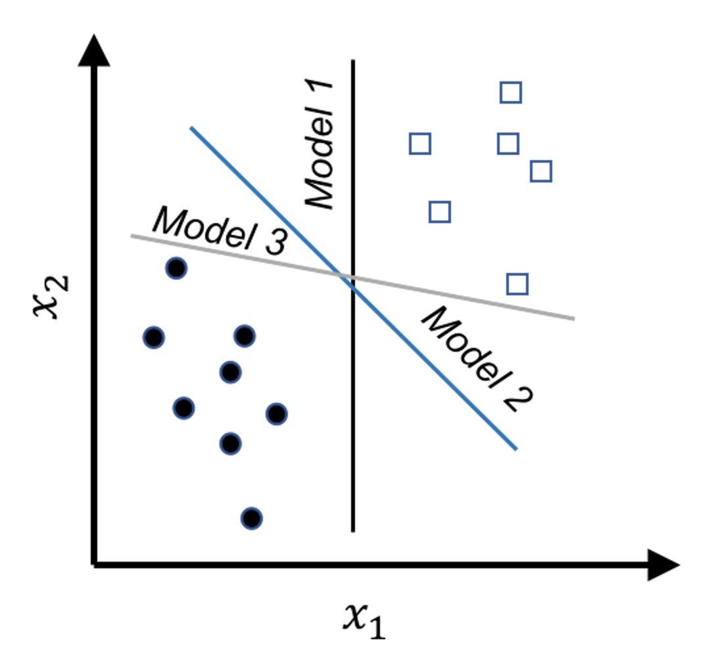 Figure 117: Which model (i.e., here, which line) should we use as our classification model to separate the two classes of data points?
Figure 117 shows an example of a binary classification problem. The constraints here are obvious: the models should correctly classify the data points. And the \(3\) models all perform well, while we hesitate to say that the \(3\) models are equally good. Common sense tells us that Model \(3\) is the least favorable. Unlike the other two, Model \(3\) is close to a few data points. This makes Model \(3\) bear a risk of misclassification on future unseen data: the locations of the existing data points provide a suggestion about where future unseen data may locate; but this is a suggestion, not a hard boundary.
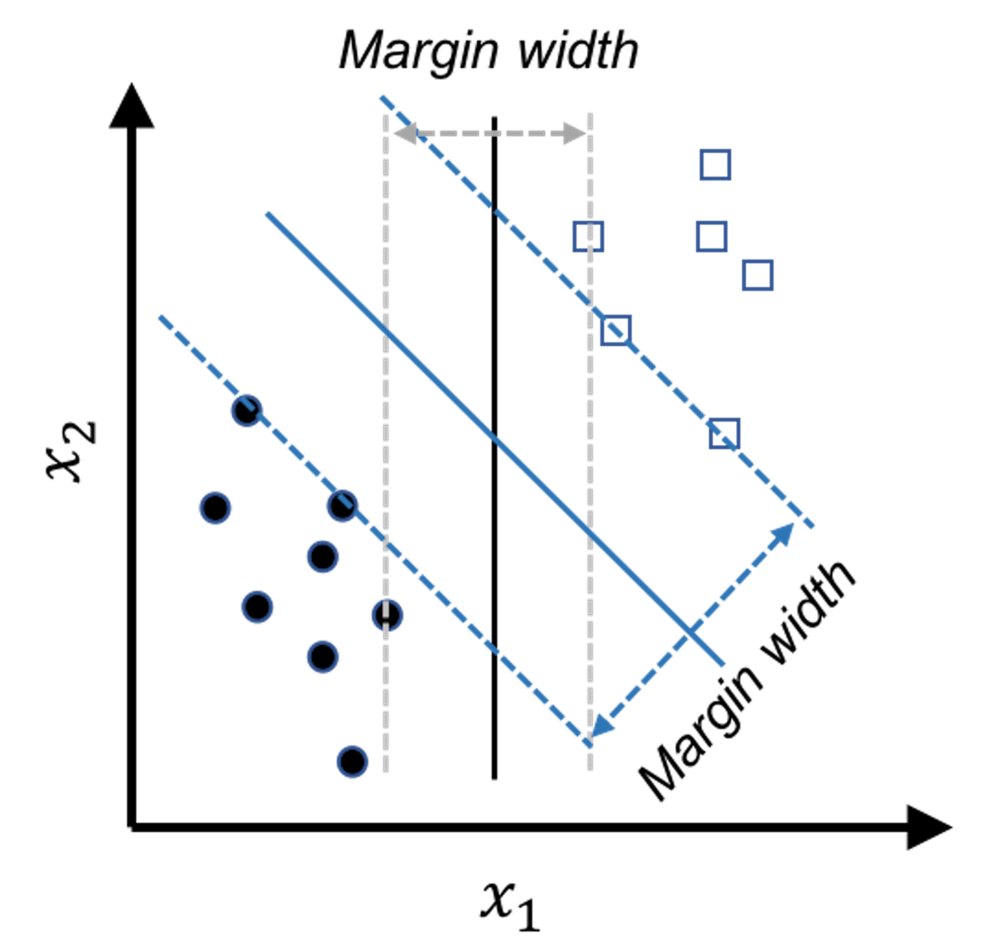 Figure 118: The model that has a larger margin is better—the basic idea of SVM
In other words, the line of Model \(3\) is too close to the data points and therefore lacks a safe margin. The concept of margin is shown in Figure 118. To reduce risk, we should have the margin as large as possible. The other two models have larger margins, and Model \(2\) is the best because it has the largest margin.
In summary, while all the models shown in Figure 117 meet the constraints (i.e., perform well on the training data points), this is just the bottom line for a model to be good, and they are ranked differently based on an objective function that maximizes the margin of the model. This is the maximum margin principle invented in SVM.
Derivation of the SVM formulation.
Consider a binary classification problem as shown in Figure 118. At this moment, we consider situations that all data points could be correctly classified by a line, which is clearly the case in Figure 117. This is called the linearly separable case. Denote the data points as \(\left\{\left(x_{n}, y_{n}\right), n=1,2, \dots, N\right\}\). Here, the outcome variable \(y\) is denoted as \(y_n \in \{1,-1\}\), i.e., \(y=1\) denotes the circle points; \(y=-1\) denotes the square points.
The mathematical model to represent a line is \(\boldsymbol{w}^{T} \boldsymbol{x}+b = 0\). Based on this form, we can segment the space into \(5\) regions, as shown in Figure 119. And by looking at the value of \(\boldsymbol{w}^{T} \boldsymbol{x}+b\), we know which region the data point \(\boldsymbol{x}\) falls into. In other words, Figure 119 tells us a classification rule
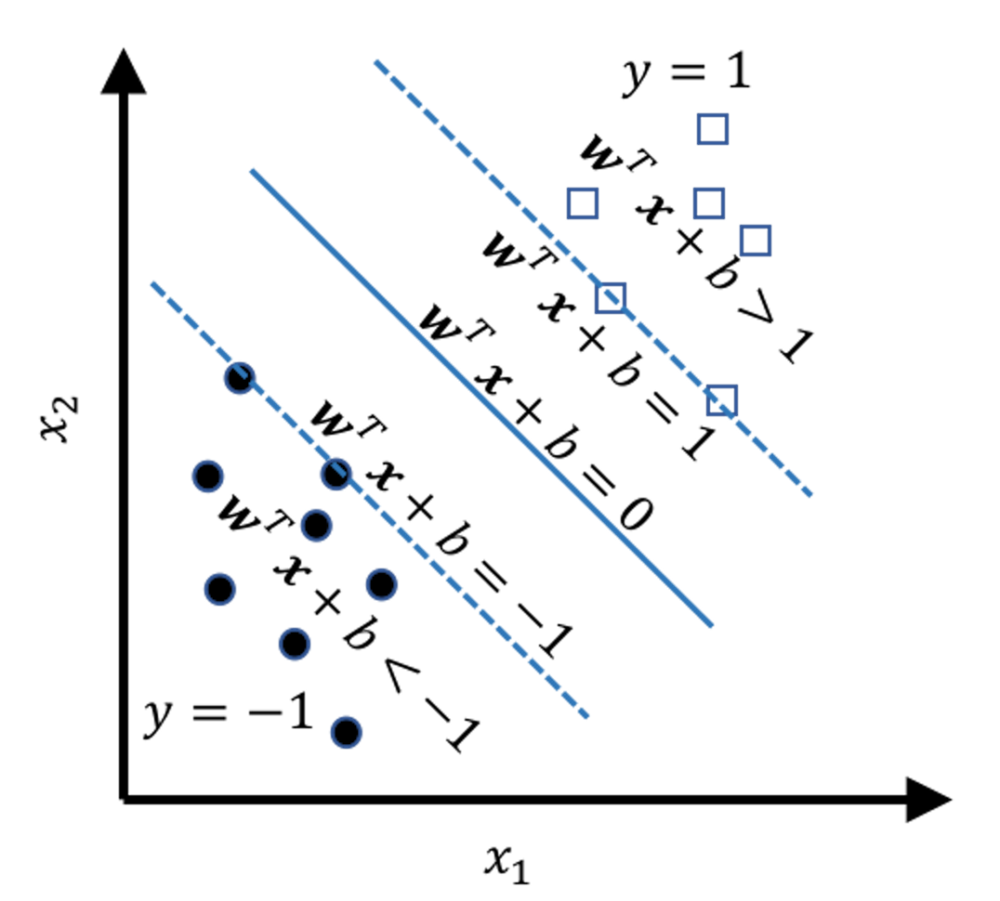 Figure 119: The \(5\) regions
\[\begin{equation} \small \begin{aligned} \text { If } \boldsymbol{w}^{T} \boldsymbol{x}+b>0, \text { then } y=1; \\ \text { Otherwise, } y=-1. \end{aligned} \tag{57} \end{equation}\]
Note that
\[\begin{equation} \small \begin{gathered} \text{For data points on the margin: } \left|\boldsymbol{w}^{T} \boldsymbol{x}+b\right|=1; \\ \text {For data points beyond the margin: } \left|\boldsymbol{w}^{T} \boldsymbol{x}+b\right|>1. \end{gathered} \tag{58} \end{equation}\]
These two equations in Eq. (58) provide the constraints for the SVM formulation, i.e., the bottom line for a model to be a good model. The two equations can be succinctly rewritten as one
\[\begin{equation*} \small y\left(\boldsymbol{w}^{T} \boldsymbol{x}+b\right) \geq 1. \end{equation*}\]
Thus, a draft version of the SVM formulation is
\[\begin{equation} \small \begin{gathered} \text{\textit{Objective function}: Maximize Margin}, \\ \text { \textit{Subject to}: } y_{n}\left(\boldsymbol{w}^{T} \boldsymbol{x}_{n}+b\right) \geq 1 \text { for } n=1,2, \ldots, N. \end{gathered} \tag{59} \end{equation}\]
The objective function is to maximize the margin of the model. Note that a model is characterized by its parameters \(\boldsymbol{w}\) and \(b\). And the goal of Eq. (59) is to find the model—and therefore, the parameters—that maximizes the margin. In order to carry out this idea, we need the margin to be a concrete mathematical entity that could be characterized by the parameters \(\boldsymbol{w}\) and \(b\)170 Not all good ideas could be readily materialized in concrete mathematical forms. There is no guaranteed mathematical reality and if there is one it is always hard-earned..
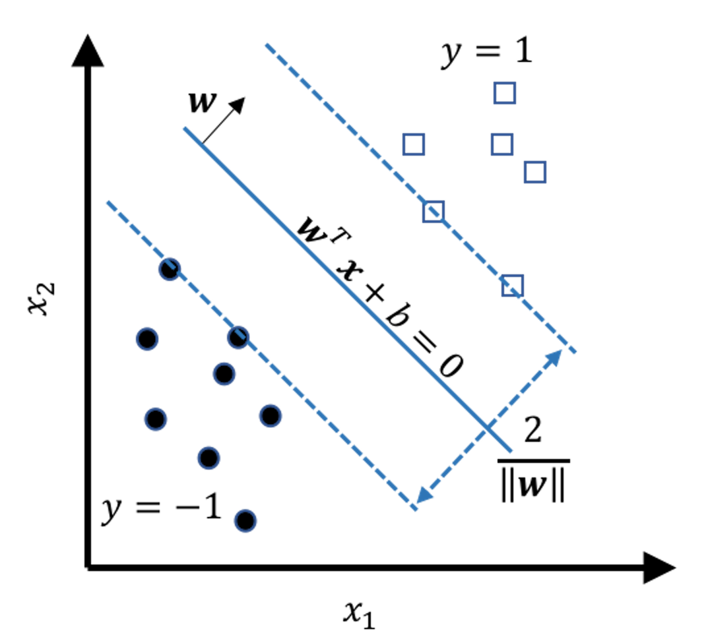 Figure 120: Illustration of the margin as a function of \(\boldsymbol{w}\)
We refer readers to the Remarks section to see details of how the margin is derived as a function of \(\boldsymbol{w}\). Figure 120 shows the result: the margin of the model is \(\frac{2}{\|\boldsymbol{w}\|}\). Here, \(\|\boldsymbol{w}\|^{2} = \boldsymbol{w}^{T} \boldsymbol{w}\). And note that to maximize the margin of a model is equivalent to minimize \(\|\boldsymbol{w}\|\). This gives us the objective function of the SVM model171 Note that here we use \(\|\boldsymbol{w}\|^{2}\) instead of \(\|\boldsymbol{w}\|\). This formulation is easier to solve.
\[\begin{equation} \small \text {Maximize Margin} = \min _{\boldsymbol{w}} \frac{1}{2}\|\boldsymbol{w}\|^{2}. \tag{60} \end{equation}\]
Thus, the final SVM formulation is
\[\begin{equation} \small \begin{gathered} \min _{\boldsymbol{w}} \frac{1}{2}\|\boldsymbol{w}\|^{2}, \\ \text { Subject to: } y_{n}\left(\boldsymbol{w}^{T} \boldsymbol{x}_{n}+b\right) \geq 1 \text { for } n=1,2, \ldots, N. \end{gathered} \tag{61} \end{equation}\]
Optimization solution.
Eq. (61) is called the primal formulation of SVM. To solve it, it is often converted into its dual form, the dual formulation of SVM. This could be done by the method of Lagrange multiplier that introduces a dummy variable, \(\alpha_{n}\), for each constraint, i.e., \(y_{n}\left(\boldsymbol{w}^{T}\boldsymbol{x}_{n}+b\right)\geq 1\), such that we could move the constraints into the objective function. By definition, \(\alpha_{n} \geq 0\).
\[\begin{equation*} \small L(\boldsymbol{w}, b, \boldsymbol{\alpha})=\frac{1}{2}\|\boldsymbol{w}\|^{2}-\sum_{n=1}^{N} \alpha_{n}\left[y_{n}\left(\boldsymbol{w}^{T} \boldsymbol{x}_{n}+b\right)-1\right]. \end{equation*}\]
This could be rewritten as
\[\begin{equation} \small L(\boldsymbol{w}, b, \boldsymbol{\alpha}) = \underbrace{\frac{1}{2} \boldsymbol{w}^{T} \boldsymbol{w}}_{(1)} - \underbrace{\sum_{n=1}^{N} \alpha_{n} y_{n} \boldsymbol{w}^{T} \boldsymbol{x}_{n}}_{(2)}-\underbrace{b \sum_{n=1}^{N} \alpha_{n} y_{n}}_{(3)}+\underbrace{\sum_{n=1}^{N} \alpha_{n}}_{(4)}. \tag{62} \end{equation}\]
Then we use the First Derivative Test again: differentiating \(L(\boldsymbol{w}, b, \boldsymbol{\alpha})\) with respect to \(\boldsymbol{w} \text { and } b\), and setting them to \(0\) yields the following solutions
\[\begin{equation} \small \boldsymbol{w}=\sum_{n=1}^{N} \alpha_{n} y_{n} \boldsymbol{x}_{n}; \tag{63} \end{equation}\]
\[\begin{equation} \small \sum_{n=1}^{N} \alpha_{n} y_{n}=0. \tag{64} \end{equation}\]
Using the conclusion in Eq. (63), part (1) of Eq. (62) could be rewritten as
\[\begin{equation*} \small \frac{1}{2} \boldsymbol{w}^{T} \boldsymbol{w}=\frac{1}{2} \boldsymbol{w}^{T} \sum_{n=1}^{N} \alpha_{n} y_{n} \boldsymbol{x}_{n}=\frac{1}{2} \sum_{n=1}^{N} \alpha_{n} y_{n} \boldsymbol{w}^{T} \boldsymbol{x}_{n}. \end{equation*}\]
It has the same form as part (2) of Eq. (62). The two could be merged together into \(-\frac{1}{2} \sum_{n=1}^{N} \alpha_{n} y_{n} \boldsymbol{w}^{T} \boldsymbol{x}_{n}\). Note that172 I.e., use the conclusion in Eq. (63) again.
\[\begin{equation*} \small \frac{1}{2} \sum_{n=1}^{N} \alpha_{n} y_{n} \boldsymbol{w}^{T} \boldsymbol{x}_{n}=\frac{1}{2} \sum_{n=1}^{N} \alpha_{n} y_{n}\left(\sum_{n=1}^{N} \alpha_{n} y_{n} \boldsymbol{x}_{n}\right)^{T} \boldsymbol{x}_{n}=\frac{1}{2} \sum_{n=1}^{N} \sum_{m=1}^{N} \alpha_{n} \alpha_{m} y_{n} y_{m} \boldsymbol{x}_{n}^{T} \boldsymbol{x}_{m}. \end{equation*}\]
Part (3) of Eq. (62), according to the conclusion in Eq. (64), is \(0\).
Based on these results, we can rewrite \(L(\boldsymbol{w}, b, \boldsymbol{\alpha})\) as
\[\begin{equation*} \small L(\boldsymbol{w}, b, \boldsymbol{\alpha})=\sum_{n=1}^{N} \alpha_{n}-\frac{1}{2} \sum_{n=1}^{N} \sum_{m=1}^{N} \alpha_{n} \alpha_{m} y_{n} y_{m} \boldsymbol{x}_{n}^{T} \boldsymbol{x}_{m}. \end{equation*}\]
This is the objective function of the dual formulation of Eq. (61). The decision variables are the Lagrange multipliers, the \(\boldsymbol{\alpha}\). By definition the Lagrange multipliers should be non-negative, and we have the constraint of the Lagrange multipliers described in Eq. (64). All together, the dual formulation of the SVM model is
\[\begin{equation} \small \begin{gathered} \max _{\boldsymbol{\alpha}} \sum_{n=1}^{N} \alpha_{n}-\frac{1}{2} \sum_{n=1}^{N} \sum_{m=1}^{N} \alpha_{n} \alpha_{m} y_{n} y_{m} \boldsymbol{x}_{n}^{T} \boldsymbol{x}_{m}, \\ \text { Subject to: } \alpha_{n} \geq 0 \text { for } n=1,2, \dots, N \text {, and } \sum_{n=1}^{N} \alpha_{n} y_{n}=0. \end{gathered} \tag{65} \end{equation}\]
This is a quadratic programming problem that can be solved using many existing well established algorithms.
Support vectors.
The data points that lay on the margins, as shown in Figure 121, are called support vectors. These geometrically unique data points are also found to be numerically interesting: in the solution of the dual formulation of SVM as shown in Eq. (65), the \(\alpha_{n}\)s that correspond to the support vectors are those that are nonzero. In other words, the data points that are not support vectors will have their \(\alpha_{n}\)s to be zero in the solution of Eq. (65).173 Note that each data point contributes a constraint in the primal formulation of SVM, and therefore, corresponds to a \(\alpha_{n}\) in the dual formulation.
If we revisit Eq. (63), we can see that only the nonzero \(\alpha_n\) contribute to the estimation of \(\boldsymbol{w}\). Indeed, Figure 121 shows that support vectors are sufficient to geometrically define the margins. And if we know the margins, the decision boundary is determined, i.e., as the central line in the middle of the two margins.
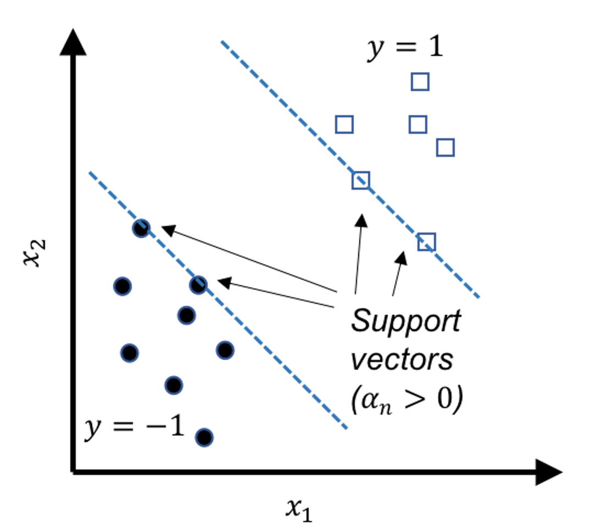 Figure 121: Support vectors are the data points that lay on the margins. In other words, the support vectors define the margins.
The support vectors hold crucial implications for the learned model. Theoretical evidences showed that the number of support vectors is a metric that can indicate the “healthiness” of the model, i.e., the smaller the total number of support vectors, the better the model. It also reveals that the main statistical information of a given dataset the SVM model uses is the support vectors. The number of support vectors is usually much smaller than the number of data points \(N\). Some works have been inspired to accelerate the SVM model training by discarding the data points that are probably not support vectors174 If we can screen the data points before we solve Eq. (65) by discarding some data points that are not support vectors, the size of the optimization problem in Eq. (65) could be reduced.. To understand why the nonzero \(\alpha_n\) correspond to the support vectors, interested readers can find the derivation in the Remarks section.
Summary. After solving Eq. (65), we obtain the solutions of \(\boldsymbol{\alpha}\). With that, we estimate the parameter \(\boldsymbol{w}\) based on Eq. (63). To estimate the parameter \(b\), we use any support vector, i.e., say, \((\boldsymbol{x}_{n}, y_n)\), and estimate \(b\) by
\[\begin{equation*} \small \text{If } y_n = 1, b=1-\boldsymbol{w}^{T} \boldsymbol{x}_{n}; \end{equation*}\]
\[\begin{equation} \text{If } y_n = -1, b=-1-\boldsymbol{w}^{T} \boldsymbol{x}_{n}.\tag{66} \end{equation}\]
Extension to nonseparable cases.
We have assumed that the two classes are separable. Since this is impossible in some applications, we revise the SVM formulation—specifically, to revise the constraints of the SVM formulation—by allowing some data points to be within the margins or even on the wrong side of the decision boundary.
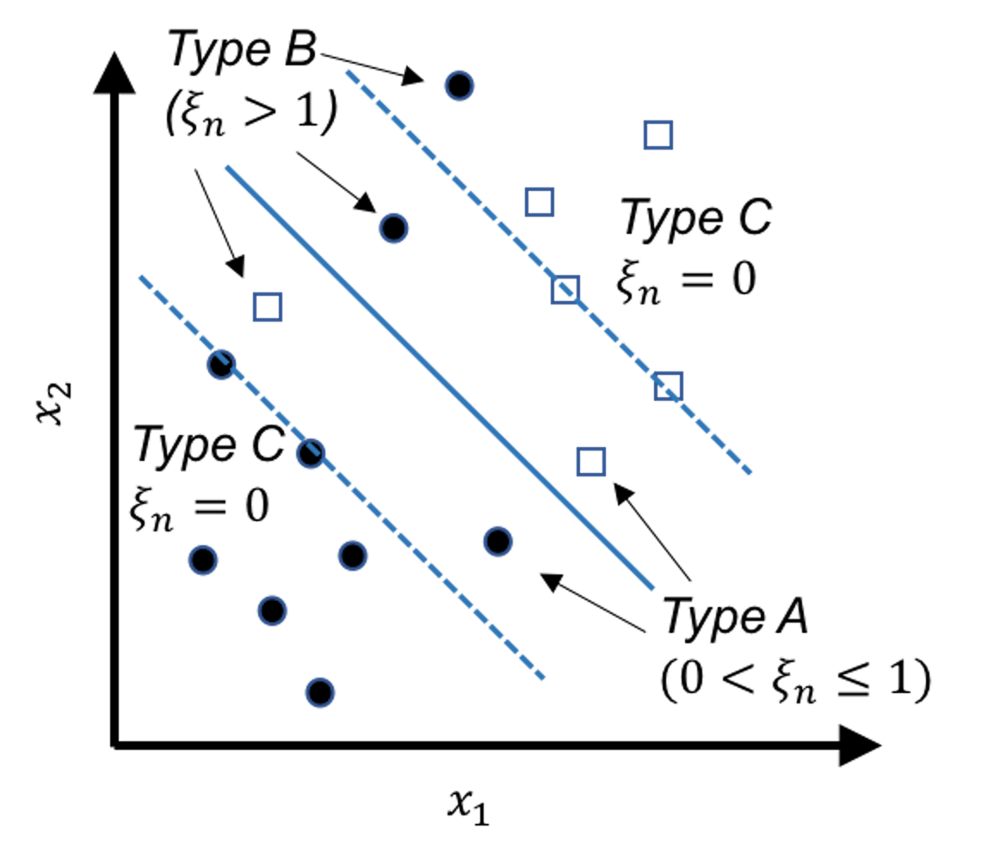 Figure 122: Behaviors of the slack variables
Note that the original constraint structure in Eq. (61) is derived based on the linearly separable case shown in Figure 117. For the nonseparable case, Figure 122 shows three scenarios: the Type A data points fall within the margins but still on the right side of their class, the Type B data points fall on the wrong side of their class, and the Type C data points fall on the right side of their class and also beyond or on the margin.
The Type A data points and the Type B data points are both compromised, and we introduce a slack variable to describe the degree of compromise for both types of data points.
For instance, consider the circle points that belong to the class (\(y_n=1\)), we have175 Readers may revisit Figure 119 to understand Eq. (67).
\[\begin{equation} \small \begin{gathered} \text {Data points (Type A): } \boldsymbol{w}^{T} \boldsymbol{x}_{n}+b \in (0,1); \\ \text {Data points (Type B): } \boldsymbol{w}^{T} \boldsymbol{x}_{n}+b < 0. \end{gathered} \tag{67} \end{equation}\]
Then we define a slack variable \(\xi_{n}\) for any data point \(n\) of Types A or B
\[\begin{equation*} \small \text {The slack variable $\xi_{n}$}: \xi_{n} = 1 - \left(\boldsymbol{w}^{T} \boldsymbol{x}_{n}+b\right). \end{equation*}\]
And we define \(\xi_{n}\) for any data point of Type C to be \(0\) since there is no compromise.
All together, as shown in Figure 122, we have
\[\begin{equation} \small \begin{gathered} \text {Data points (Type A): } \xi_{n} \in (0,1]; \\ \text {Data points (Type B): } \xi_{n} > 1; \\ \text {Data points (Type C): } \xi_{n}=0. \end{gathered} \tag{68} \end{equation}\]
Similarly, for the square points that belong to the class (\(y= -1\)), we define a slack variable \(\xi_{n}\) for each data point \(n\)
\[\begin{equation*} \small \text {The slack variable $\xi_{n}$}: \xi_{n} = 1 + \left(\boldsymbol{w}^{T} \boldsymbol{x}_{n}+b\right). \end{equation*}\]
The same result in Eq. (68) could be derived.
As the slack variable \(\xi_{n}\) describes the degree of compromise for the data point \(\boldsymbol{x}_{n}\), an optimal SVM model should also minimize the total amount of compromise. Based on this additional learning principle, we revise the objective function in Eq. (61) and get
\[\begin{equation} \small \underbrace{\min _{\boldsymbol{w}} \frac{1}{2}\|\boldsymbol{w}\|^{2}}_{\text{\textit{Maximize Margin}}} + \underbrace{C \sum_{n=1}^{N} \xi_{n}.}_{\text{\textit{Minimize Slacks}}} \tag{69} \end{equation}\]
Here, \(C\) is a user-specified parameter to control the balance between the two objectives: maximum margin and minimum sum of slacks.
Then we revise the constraints176 I.e., use the results in Figure 119 and Figure 122. to be
\[\begin{equation*} \small y_{n}\left(\boldsymbol{w}^{T} \boldsymbol{x}_{n}+b\right) \geq 1-\xi_{n} \text {, for } n=1,2, \dots, N. \tag{70} \end{equation*}\]
Putting the revised objective function and constraints together, the formulation of the SVM model for nonseparable case becomes
\[\begin{equation} \begin{gathered} \min _{\boldsymbol{w}} \frac{1}{2}\|\boldsymbol{w}\|^{2}+C \sum_{n=1}^{N} \xi_{n}, \\ \text { Subject to: } y_{n}\left(\boldsymbol{w}^{T} \boldsymbol{x}_{n}+b\right) \geq 1-\xi_{n}, \\ \xi_{n} \geq 0, \text { for } n=1,2, \ldots, N. \end{gathered} \tag{71} \end{equation}\]
A dual form that is similar to Eq. (65) could be derived, which is skipped here177 Interested readers could read this book for a comprehensive and deep understanding of SVM: Scholkopf, B. and Smola, A.J., Learning with Kernels: Support Vector Machines, Regularization, Optimization, and Beyond. MIT Press, 2001..
Extension to nonlinear SVM.
Sometimes, the decision boundary could not be characterized as linear models, i.e., see Figure 123 (a).
Figure 123: (a) A nonseparable dataset; (b) with the right transformation, (a) becomes linearly separable
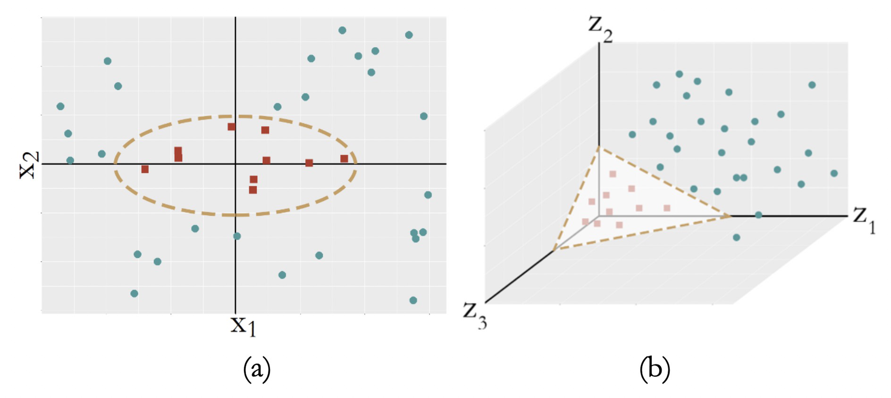A common strategy to create a nonlinear model is to conduct transformation of the original variables. For Figure 123 (a), we conduct a transformation from the original two-dimensional coordinate system \(\boldsymbol{x}\) to a new coordinate system \(\boldsymbol{z}\) that is three-dimensional
\[\begin{equation} \small z_{1}=x_{1}^{2}, z_{2}=\sqrt{2} x_{1} x_{2}, z_{3}=x_{2}^{2}. \tag{72} \end{equation}\]
In the new coordinate system, as shown in Figure 123 (b), the data points of the two classes become linearly separable.
The transformation employed in Eq. (72) is explicit, which may not be suitable for applications where we don’t know what is a good transformation178 Try a ten-dimensional \(\boldsymbol{x}\) and see how troublesome it is to define an explicit transformation to enable linear separability of the classes.. Thus, transformation that could be automatically identified by the learning algorithm is needed, even if the transformation is implicit. A remarkable thing about SVM is that its formulation allows automatic transformation.
Let’s revisit the dual formulation of SVM for the linearly separable case, as shown in Eq. (65). Assume that the transformation has been performed and now we build the SVM model based on the transformed features, \(\boldsymbol{z}\). The dual formulation of SVM on the transformed variables is
\[\begin{equation} \small \begin{gathered} \max _{\boldsymbol{\alpha}} \sum_{n=1}^{N} \alpha_{n}-\frac{1}{2} \sum_{n=1}^{N} \sum_{m=1}^{N} \alpha_{n} \alpha_{m} y_{n} y_{m} \boldsymbol{z}_{n}^{T} \boldsymbol{z}_{m}, \\ \text { Subject to: } \alpha_{n} \geq 0 \text { for } n=1,2, \dots, N, \\ \sum_{n=1}^{N} \alpha_{n} y_{n}=0. \end{gathered} \tag{73} \end{equation}\]
It can be seen that, the dual formulation of SVM doesn’t directly concern \(\boldsymbol{z}_{n}\). Rather, only the inner product of \(\boldsymbol{z}_{n}^{T} \boldsymbol{z}_{m}\) is needed. As \(\boldsymbol{z}\) is essentially a function of \(\boldsymbol{x}\), i.e., denote it as \(\boldsymbol{z}=\phi(\boldsymbol{x})\), \(\boldsymbol{z}_{n}^{T} \boldsymbol{z}_{m}\) is essentially a function of \(\boldsymbol{x}_{n} \text { and } \boldsymbol{x}_{m}\). We can write it up as \(\boldsymbol{z}_{n}^{T} \boldsymbol{z}_{m}=K\left(\boldsymbol{x}_{n}, \boldsymbol{x}_{m}\right)\). This is called the kernel function.
A kernel function is a function that entails a transformation \(\boldsymbol{z}=\phi(\boldsymbol{x})\) such that \(K\left(\boldsymbol{x}_{n}, \boldsymbol{x}_{m}\right)\) is an inner product: \(K\left(\boldsymbol{x}_{n}, \boldsymbol{x}_{m}\right)=\phi(\boldsymbol{x}_{n})^{T} \phi(\boldsymbol{x}_{m})\). In other words, we now do not seek explicit form of \(\phi(\boldsymbol{x}_{n})\); rather, we seek kernel functions that entail such transformations179 If a kernel function is proven to entail a transformation function \(\phi(\boldsymbol{x})\)—even it is only proven in theory and never really made explicit in practice—it is as good as explicit transformation, because only the inner product of \(\boldsymbol{z}_{n}^{T} \boldsymbol{z}_{m}\) is needed in Eq. (73)..
Many kernel functions have been developed. For example, the Gaussian radial basis kernel function is a popular choice
\[\begin{equation*} \small K\left(\boldsymbol{x}_{n}, \boldsymbol{x}_{m}\right)=e^{-\gamma\left\|\boldsymbol{x}_{n}-\boldsymbol{x}_{m}\right\|^{2}}, \end{equation*}\]
where the transformation \(\boldsymbol{z}=\phi(\boldsymbol{x})\) is implicit and is proved to be infinitely long180 Which means it is very flexible and can represent any smooth function..
The polynomial kernel function is defined as
\[\begin{equation*} \small K\left(\boldsymbol{x}_{n}, \boldsymbol{x}_{m}\right)=\left(\boldsymbol{x}_{n}^{T} \boldsymbol{x}_{m}+1\right)^{q}. \end{equation*}\]
The linear kernel function181 For linear kernel function, the transformation is trivial, i.e., \(\phi(\boldsymbol{x}) = \boldsymbol{x}\). is defined as
\[\begin{equation*} \small K\left(\boldsymbol{x}_{n}, \boldsymbol{x}_{m}\right)=\boldsymbol{x}_{n}^{T} \boldsymbol{x}_{m}. \end{equation*}\]
With a given kernel function, the dual formulation of SVM is
\[\begin{equation} \small \begin{gathered} \max _{\boldsymbol{\alpha}} \sum_{n=1}^{N} \alpha_{n}-\frac{1}{2} \sum_{n=1}^{N} \sum_{m=1}^{N} \alpha_{n} \alpha_{m} y_{n} y_{m} K\left(\boldsymbol{x}_{n}, \boldsymbol{x}_{m}\right), \\ \text { Subject to: } \alpha_{n} \geq 0 \text { for } n=1,2, \dots, N, \\ \sum_{n=1}^{N} \alpha_{n} y_{n}=0. \end{gathered} \tag{74} \end{equation}\]
After solving Eq. (74), in theory we could obtain the estimation of the parameter \(\boldsymbol{w}\) based on Eq. (75)
\[\begin{equation} \small \boldsymbol{w}=\sum_{n=1}^{N} \alpha_{n} y_{n} \phi(\boldsymbol{x_{n}}). \tag{75} \end{equation}\]
However, for kernel functions that we don’t know the explicit transformation function \(\phi(\boldsymbol{x})\), it is no longer possible to write the parameter \(\boldsymbol{w}\) in the same way as in linear SVM models. This won’t prevent us from using the learned SVM model for prediction. For a data point, denoted as \(\boldsymbol{x}_{*}\), we can use the learned SVM model to predict on it182 I.e., combine Eq. (75) and Eq. (57) we could derive Eq. (76).
\[\begin{equation} \small \begin{gathered} \text { If } \sum_{n=1}^{N} \alpha_{n} y_{n} K\left(\boldsymbol{x}_{n}, \boldsymbol{x}_{*}\right)+b>0, \text { then } y_{*}=1; \\ \text { Otherwise, } y_{*}=-1. \end{gathered} \tag{76} \end{equation}\]
Again, the specific form of \(\phi(\boldsymbol{x})\) is not needed since only the kernel function is used.
A small-data example.
Consider a dataset with \(4\) data points
\[\begin{equation*} \small \begin{array}{l}{\boldsymbol{x}_{1}=(-1,-1)^{T}, y_{1}=-1}; \\ {\boldsymbol{x}_{2}=(-1,+1)^{T}, y_{2}=+1}; \\ {\boldsymbol{x}_{3}=(+1,-1)^{T}, y_{3}=+1} ;\\ {\boldsymbol{x}_{4}=(+1,+1)^{T}, y_{4}=-1.}\end{array} \end{equation*}\]
The dataset is visualized in Figure 124. The R code to draw Figure 124 is shown below.
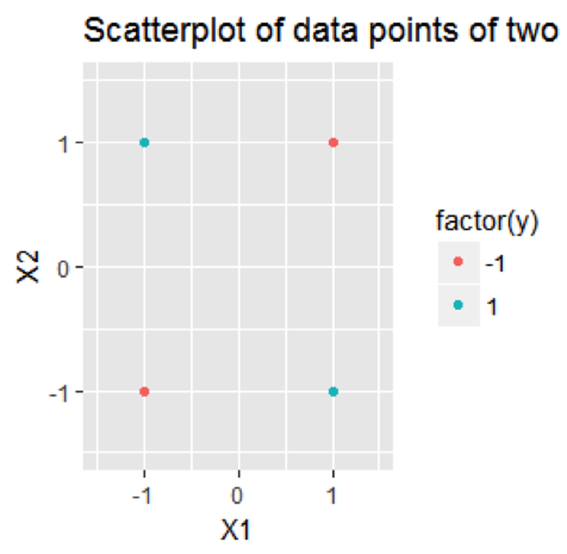 Figure 124: A linearly inseparable dataset
# For the toy problem
x = matrix(c(-1,-1,1,1,-1,1,-1,1), nrow = 4, ncol = 2)
y = c(-1,1,1,-1)
linear.train <- data.frame(x,y)
# Visualize the distribution of data points of two classes
require( 'ggplot2' )
p <- qplot( data=linear.train, X1, X2,
colour=factor(y),xlim = c(-1.5,1.5),
ylim = c(-1.5,1.5))
p <- p + labs(title = "Scatterplot of data points of two classes")
print(p)It is a nonlinear case. We use a nonlinear kernel function to build the SVM model.
Consider the polynomial kernel function with df=2
\[\begin{equation} \small K\left(\boldsymbol{x}_{n}, \boldsymbol{x}_{m}\right)=\left(\boldsymbol{x}_{n}^{T} \boldsymbol{x}_{m}+1\right)^{2}, \tag{77} \end{equation}\]
which corresponds to the transformation
\[\begin{equation} \small \phi\left(\boldsymbol{x}_{n}\right)=\left[1, \sqrt{2} x_{n, 1}, \sqrt{2} x_{n, 2}, \sqrt{2} x_{n, 1} x_{n, 2}, x_{n, 1}^{2}, x_{n, 2}^{2}\right]^{T}. \tag{78} \end{equation}\]
Based on Eq. (65), a specific formulation of the SVM model of this dataset is
\[\begin{equation} \small \begin{gathered} \max _{\boldsymbol{\alpha}} \sum_{n=1}^{4} \alpha_{n}-\frac{1}{2} \sum_{n=1}^{4} \sum_{m=1}^{4} \alpha_{n} \alpha_{m} y_{n} y_{m} K\left(\boldsymbol{x}_{n}, \boldsymbol{x}_{m}\right), \\ \text { Subject to: } \alpha_{n} \geq 0 \text { for } n=1,2, \dots, 4, \\ \text { and } \sum_{n=1}^{4} \alpha_{n} y_{n}=0. \end{gathered} \tag{79} \end{equation}\]
We calculate the kernel matrix as183 E.g., using Eq. (77), \(K\left(\boldsymbol{x}_{1}, \boldsymbol{x}_{2}\right) = \left(\boldsymbol{x}_{1}^{T} \boldsymbol{x}_{2}+1\right)^{2} = 3^2 = 9\). Readers can try other instances.
\[\begin{equation*} \small \boldsymbol{K}=\left[\begin{array}{cccc}{9} & {1} & {1} & {1} \\ {1} & {9} & {1} & {1} \\ {1} & {1} & {9} & {1} \\ {1} & {1} & {1} & {9}\end{array}\right]. \end{equation*}\]
We solve the quadratic programming problem184 I.e., use the R package quadprog. in Eq. (79) and get
\[\begin{equation} \small \alpha_{1}=\alpha_{2}=\alpha_{3}=\alpha_{4}=0.125. \tag{80} \end{equation}\]
In this particular case, since we can write up the transformation explicitly185 I.e., as shown in Eq. (78), we can write up \(\boldsymbol{w}\) explicitly as well186 It should be written as \(\widehat{\boldsymbol{w}}\), since it is an estimator of \(\boldsymbol{w}\). Here for simplicity we skip this.
\[\begin{equation*} \small \boldsymbol{w}=\sum_{n=1}^{4} \alpha_{n} y_{n} \phi\left(\boldsymbol{x}_{n}\right)=[0,0,0,1 / \sqrt{2}, 0,0]^{T}. \end{equation*}\]
For any given data point \(\boldsymbol{x}_{*}\), the explicit decision function is
\[\begin{equation*} \small f\left(\boldsymbol{x}_{*}\right)=\boldsymbol{w}^{T} \phi\left(\boldsymbol{x}_{*}\right)=x_{*, 1} x_{*, 2}. \end{equation*}\]
This is the decision boundary for a typical XOR problem187 Also known as exclusive or or exclusive disjunction, the XOR problem is a logical operation that outputs true only when inputs differ (e.g., one is true, the other is false)..
We then use R to build an SVM model on this dataset188 We use the R package kernlab—more details are shown in the section R Lab.. The R code is shown in below.
# Train a nonlinear SVM model
# polynomial kernel function with `df=2`
x <- cbind(1, poly(x, degree = 2, raw = TRUE))
coefs = c(1,sqrt(2),1,sqrt(2),sqrt(2),1)
x <- x * t(matrix(rep(coefs,4),nrow=6,ncol=4))
linear.train <- data.frame(x,y)
require( 'kernlab' )
linear.svm <- ksvm(y ~ ., data=linear.train,
type='C-svc', kernel='vanilladot', C=10, scale=c())The function alpha() returns the values of \(\alpha_{n} \text { for } n=1,2, \dots, 4\). Our results as shown in Eq. (80) are consistent with the results obtained by using R.189 If your answer is different, check if the alpha() function in the kernlab() package scales the vector \(\alpha\), i.e., to make the sum as \(1\).
alpha(linear.svm) #scaled alpha vector
## [[1]]
## [1] 0.125 0.125 0.125 0.125The 7-Step R Pipeline. Step 1 and Step 2 get data into R and make appropriate preprocessing.
# Step 1 -> Read data into R workstation
library(RCurl)
url <- paste0("https://raw.githubusercontent.com",
"/analyticsbook/book/main/data/AD.csv")
data <- read.csv(text=getURL(url))
# Step 2 -> Data preprocessing
# Create X matrix (predictors) and Y vector (outcome variable)
X <- data[,2:16]
Y <- data$DX_bl
Y <- paste0("c", Y)
Y <- as.factor(Y)
data <- data.frame(X,Y)
names(data)[16] = c("DX_bl")
# Create a training data (half the original data size)
train.ix <- sample(nrow(data),floor( nrow(data)/2) )
data.train <- data[train.ix,]
# Create a testing data (half the original data size)
data.test <- data[-train.ix,]Step 3 puts together a list of candidate models.
# Step 3 -> gather a list of candidate models
# SVM: often to compare models with different kernels,
# different values of C, different set of variables
# Use different set of variables
model1 <- as.formula(DX_bl ~ .)
model2 <- as.formula(DX_bl ~ AGE + PTEDUCAT + FDG
+ AV45 + HippoNV + rs3865444)
model3 <- as.formula(DX_bl ~ AGE + PTEDUCAT)
model4 <- as.formula(DX_bl ~ FDG + AV45 + HippoNV)Step 4 uses \(10\)-fold cross-validation to evaluate the performance of the candidate models. Below we show how it works for one model. For other models, the same script could be used with a slight modification.
# Step 4 -> Use 10-fold cross-validation to evaluate the models
n_folds = 10
# number of fold
N <- dim(data.train)[1]
folds_i <- sample(rep(1:n_folds, length.out = N))
# evaluate the first model
cv_err <- NULL
# cv_err makes records of the prediction error for each fold
for (k in 1:n_folds) {
test_i <- which(folds_i == k)
# In each iteration, use one fold of data as the testing data
data.test.cv <- data.train[test_i, ]
# The remaining 9 folds' data form our training data
data.train.cv <- data.train[-test_i, ]
require( 'kernlab' )
linear.svm <- ksvm(model1, data=data.train.cv,
type='C-svc', kernel='vanilladot', C=10)
# Fit the linear SVM model with the training data
y_hat <- predict(linear.svm, data.test.cv)
# Predict on the testing data using the trained model
true_y <- data.test.cv$DX_bl
# get the the error rate
cv_err[k] <-length(which(y_hat != true_y))/length(y_hat)
}
mean(cv_err)
# evaluate the second model ...
# evaluate the third model ...
# ...Results are shown below.
## [1] 0.1781538
## [1] 0.1278462
## [1] 0.4069231
## [1] 0.1316923The second model is the best.
Step 5 uses the training data to fit a final model, through the ksvm() function in the package kernlab.
# Step 5 -> After model selection,
# use ksvm() function to build your final model
linear.svm <- ksvm(model2, data=data.train,
type='C-svc', kernel='vanilladot', C=10) Step 6 uses the fitted final model for prediction on the testing data.
# Step 6 -> Predict using your SVM model
y_hat <- predict(linear.svm, data.test) 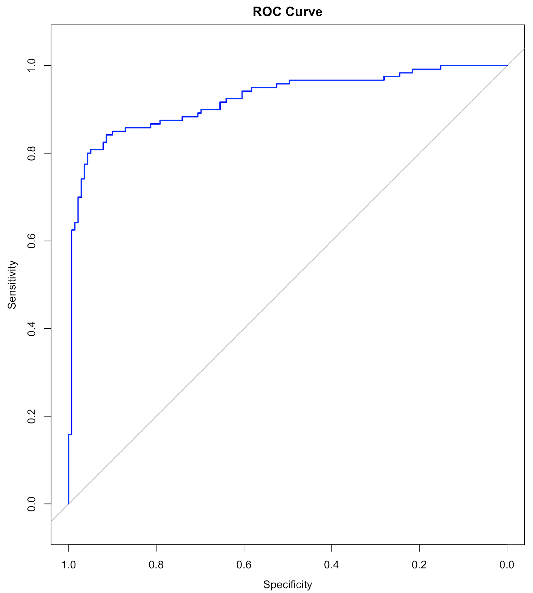 Figure 125: The ROC curve of the final SVM model
Step 7 evaluates the performance of the model.
# Step 7 -> Evaluate the prediction performance of the SVM model
# (1) The confusion matrix
library(caret)
confusionMatrix(y_hat, data.test$DX_bl)
# (2) ROC curve
library(pROC)
y_hat <- predict(linear.svm, data.test, type = 'decision')
plot(roc(data.test$DX_bl, y_hat),
col="blue", main="ROC Curve")Results are shown below. And the ROC curve is shown in Figure 125.
## Confusion Matrix and Statistics
##
## Reference
## Prediction c0 c1
## c0 131 27
## c1 11 90
##
## Accuracy : 0.8533
## 95% CI : (0.8042, 0.894)
## No Information Rate : 0.5483
## P-Value [Acc > NIR] : < 2e-16
##
## Kappa : 0.7002
##
## Mcnemar's Test P-Value : 0.01496
##
## Sensitivity : 0.9225
## Specificity : 0.7692
## Pos Pred Value : 0.8291
## Neg Pred Value : 0.8911
## Prevalence : 0.5483
## Detection Rate : 0.5058
## Detection Prevalence : 0.6100
## Balanced Accuracy : 0.8459
##
## 'Positive' Class : c0Beyond the 7-Step R Pipeline.
In the 7-step pipeline, we create a list of candidate models by different selections of predictors. There are other parameters, such as the kernel function, the value of \(C\), that should be concerned in model selection. The R package caret can automate the process of cross-validation and facilitate the optimization of multiple parameters simultaneously. Below is an example
library(RCurl)
url <- paste0("https://raw.githubusercontent.com",
"/analyticsbook/book/main/data/AD.csv")
AD <- read.csv(text=getURL(url))
str(AD)
#Train and Tune the SVM
n = dim(AD)[1]
n.train <- floor(0.8 * n)
idx.train <- sample(n, n.train)
AD[which(AD[,1]==0),1] = rep("Normal",length(which(AD[,1]==0)))
AD[which(AD[,1]==1),1] = rep("Diseased",length(which(AD[,1]==1)))
AD.train <- AD[idx.train,c(1:16)]
AD.test <- AD[-idx.train,c(1:16)]
trainX <- AD.train[,c(2:16)]
trainy= AD.train[,1]
## Setup for cross-validation:
# 10-fold cross validation
# do 5 repetitions of cv
# Use AUC to pick the best model
ctrl <- trainControl(method="repeatedcv",
repeats=1,
summaryFunction=twoClassSummary,
classProbs=TRUE)
# Use the expand.grid to specify the search space
grid <- expand.grid(sigma = c(0.002, 0.005, 0.01, 0.012, 0.015),
C = c(0.3,0.4,0.5,0.6)
)
# method: Radial kernel
# tuneLength: 9 values of the cost function
# preProc: Center and scale data
svm.tune <- train(x = trainX, y = trainy,
method = "svmRadial", tuneLength = 9,
preProc = c("center","scale"), metric="ROC",
tuneGrid = grid,
trControl=ctrl)
svm.tuneThen we can obtain the following results
## Support Vector Machines with Radial Basis Function Kernel
##
## 413 samples
## 15 predictor
## 2 classes: 'Diseased', 'Normal'
##
## Pre-processing: centered (15), scaled (15)
## Resampling: Cross-Validated (10 fold, repeated 1 times)
## Summary of sample sizes: 371, 372, 372, 371, 372, 372, ...
## Resampling results across tuning parameters:
##
## sigma C ROC Sens Spec
## 0.002 0.3 0.8929523 0.9121053 0.5932900
## 0.002 0.4 0.8927130 0.8757895 0.6619048
## 0.002 0.5 0.8956402 0.8452632 0.7627706
## 0.002 0.6 0.8953759 0.8192105 0.7991342
## 0.005 0.3 0.8965129 0.8036842 0.8036797
## 0.005 0.4 0.8996565 0.7989474 0.8357143
## 0.005 0.5 0.9020830 0.7936842 0.8448052
## 0.005 0.6 0.9032422 0.7836842 0.8450216
## 0.010 0.3 0.9030514 0.7889474 0.8541126
## 0.010 0.4 0.9058248 0.7886842 0.8495671
## 0.010 0.5 0.9060999 0.8044737 0.8541126
## 0.010 0.6 0.9077848 0.8094737 0.8450216
## 0.012 0.3 0.9032308 0.7781579 0.8538961
## 0.012 0.4 0.9049043 0.7989474 0.8538961
## 0.012 0.5 0.9063505 0.8094737 0.8495671
## 0.012 0.6 0.9104511 0.8042105 0.8586580
## 0.015 0.3 0.9060412 0.7886842 0.8493506
## 0.015 0.4 0.9068165 0.8094737 0.8495671
## 0.015 0.5 0.9109051 0.8042105 0.8541126
## 0.015 0.6 0.9118615 0.8042105 0.8632035
##
## ROC was used to select the optimal model using the largest
## value. The final values used for the model were
## sigma = 0.015 and C = 0.6.Ensemble learning is another example of how we design better learning algorithms. The random forest model is a particular case of ensemble models. An ensemble model consists of \(K\) base models, denoted as, \(h_{1}, h_{2}, \ldots, h_{K}\). The algorithms to create ensemble models differ from each other in terms of the types of the base models, the way to create diversity in the base models, etc.
We have known the random forest model uses Bootstrap to create many datasets and builds a set of decision tree models. Some other ensemble learning methods, such as the AdaBoost model, also use decision tree as the base model. The two differ in the way to build a diverse set of base models. The framework of AdaBoost is illustrated in Figure 126. AdaBoost employs a sequential process to build its base models: it uses the original dataset (when the weights for the data points are equal) to build a decision tree; then it uses the decision tree to predict on the dataset, obtains the errors, and updates the weights of the data points190 I.e., those data points that are wrongly classified will gain higher weights.; then it builds another decision tree on the same dataset with the new weights, obtains the errors, and updates the weights of the data points again. The sequential process continues, until a given number of decision trees are built. This sequential process is designed for adaptability: later models focus more on the hard data points that present challenges for previous base models to achieve good prediction performance. Interested readers may find a formal presentation of the AdaBoost algorithm in the Remarks section.
Figure 126: A general framework of AdaBoost
The ensemble learning is flexible, given that any model could be a base model. And there are a variety of ways to resample or perturb a dataset to create a diverse set of base models. Like SVM, the ensemble learning is another approach to have a built-in mechanism to reduce the risk of overfitting. Here, we provide a discussion of this built-in mechanism using the framework proposed by Dietterich191 Dietterrich, T.G., Ensemble methods in machine learning, Multiple Classifier Systems, Springer, 2000., where three perspectives (statistical, computational, and representational) were used to explain why ensemble methods could lead to robust performance. Each perspective is described in details below.
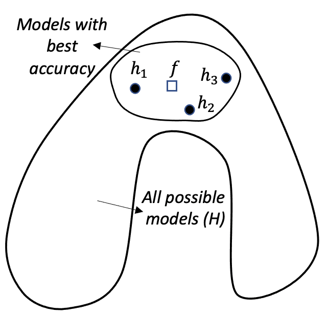 Figure 127: Ensemble learning approximates the true model with a combination of good models (statistical perspective)
Statistical perspective. The statistical reason is illustrated in Figure 127. \(\mathcal{H}\) is the model space where a learning algorithm searches for the best model guided by the training data. A model corresponds to a point in Figure 127, e.g., the point labelled as \(f\) is the true model. When the data is limited and the best models are multiple, the problem is a statistical one and we need to make an optimal decision despite the uncertainty. This is illustrated by the inner circle in Figure 127. By building an ensemble of multiple base models, e.g., the \(h_{1}, h_{2}, \text { and } h_{3}\) in Figure 127, the average of the models is a good approximation to the true model \(f\). This combined solution, comparing with other models that only identify one best model, has less variance, and therefore, could be more robust.
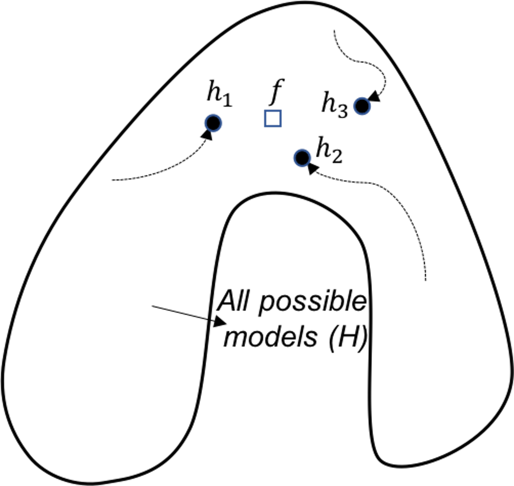 Figure 128: Ensemble learning provides a robust coverage of the true model (computational perspective)
Computational perspective. A computational perspective is shown in Figure 128. This perspective concerns the way we build base models. Often greedy approaches such as the recursive splitting procedure are used to solve optimization problems in training machine learning models. This is optimal only in a local sense192 E.g., to grow a decision tree, at each node, the node is split according to the maximum information gain at this particular node. To grow a decision tree model, a sequence of splits is needed. Optimization of all the splits simultaneously leads to a global optimal solution, but it is a NP-hard problem that is not solved yet. Optimization of each split is more practical, only we know that the local optimal solution may result in suboptimal situations for further splitting of descendant nodes.. As a remedy to this problem, the ensemble learning initializes the learning algorithm (that is greedy and heuristic) from multiple locations in \(\mathcal{H}\), i.e., as shown in Figure 128, three models are identified by the same algorithm that starts from different initial points. Exploring multiple trajectories help us find a robust coverage of the true model \(f\).
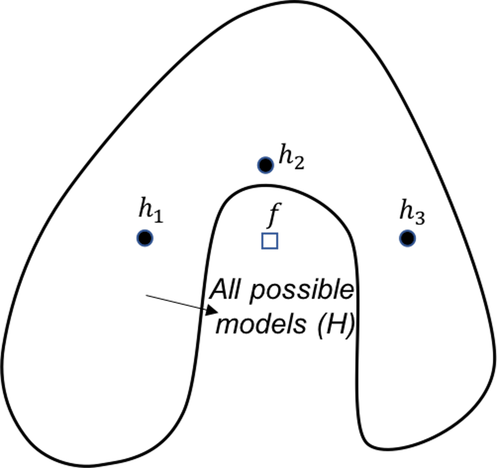 Figure 129: Ensemble learning approximates the true model with a combination of good models (representational perspective)
Representational perspective. Due to the size of the dataset or the limitations of a model, sometimes the model space \(\mathcal{H}\) does not cover the true model, i.e., in Figure 129 the true model is outside the region of \(\mathcal{H}\). This is not uncommon in real-world problems, for example, linear models cannot learn nonlinear patterns, or decision trees have difficulty in learning linear patterns. Using multiple base models may provide an approximation of the true model that is outside \(\mathcal{H}\), as shown in Figure 129.
The three models are analyzed using the three perspectives. Results are shown in Table 31. In-depth discussions are provided in the following.
Single decision tree. A single decision tree lacks the capability to overcome overfitting in terms of each of the three perspectives. From the statistical perspective, a decision tree algorithm constructs each node using the maximum information gain at that particular node only; thus, random errors in data may mislead subsequent splits. On the other hand, when the training dataset is limited, many models may perform equally well, since there are not enough data to distinguish these models. This results in a large inner circle as shown in Figure 127. With the true model \(f\) hidden in a large area in \(\mathcal{H}\), and the sensitivity of the learning algorithm to random noises in data (an issue from the computational perspective), the learning algorithm may end up with a model far away from the true model \(f\).
Table 31: Analysis of the decision tree (DT), random forests (RF), and AdaBoost using the three perspectives
| Perspectives | DT | RF | AdaBoost |
|---|---|---|---|
| Statistical | No | Yes | No |
| Computational | No | Yes | Yes |
| Representational | No | No | Yes |
From the representational perspective, there are also limitations of the decision tree model; i.e., in Chapter 2 we have shown that the decision tree model has difficulty in modeling linear patterns in the data.
Figure 130: Analysis of the random forest in terms of the statistical (left), computational (middle), and representational (right) perspectives
Random forests. From the statistical perspective, the random forest model is a good ensemble learning model. As shown in Figure 130 (left), the way the random forest model grows the base models is to construct the circle of dotted line. Models located in this circle of dotted line have reasonably good accuracy. These models may not be the best models with great accuracy, they do provide a good coverage/approximation of the true model.
Note that, if we could directly build a model that is close to \(f\), or build many best models that are located in the circle of dotted line, that would be ideal. However, both tasks are challenging. Comparing with these ideal goals, the random forest model is more pragmatic. It cleverly uses simple193 As we have seen, Simple is a complex word. techniques of randomness, i.e., the Bootstrap and the random selection of variables, that are robust, effective, and easy to implement. It grows a set of models that are not the best, but good models. Most importantly, these good models complement each other194 In practice, the challenge to grow a set of best models is that it usually ends up with these best models more or less being the same..
Random forest model can also address the computational issue. As shown in Figure 130 (middle), while the circle of solid line (i.e., that represents the space of best models) is computationally difficult to reach, averaging multiple models could provide a good approximation.
It seems that the random forest models do not actively solve the representational issue. If the true model \(f\) lies outside \(\mathcal{H}\), as shown in Figure 130 (right), averaging multiple models won’t necessarily approximate the true model.
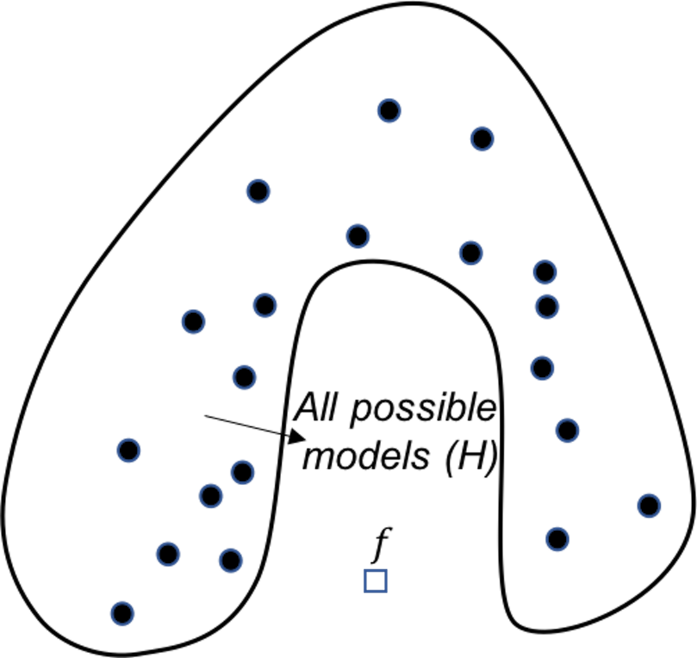 Figure 131: Analysis of the AdaBoost in terms of the representational perspective
AdaBoost. Similar to random forest, AdaBoost solves the computational issue by generating many base models. The difference is that, AdaBoost actively solves the representational issue, i.e., it tries to do better on the hard data points where the previous base models fail to predict correctly. For each base model in AdaBoost, the training dataset is not resampled by Bootstrap, but weighted based on the error rates from previous base models, i.e., data points that are difficult to be correctly predicted by the previous models are given more weights in the new training dataset for the subsequent base model. Figure 131 shows this sequential learning process helps AdaBoost identify more models around the true model, and put more weight to the models that are closer to the true model.
But AdaBoost is not as good as random forest in terms of addressing the statistical issue. As AdaBoost aggressively solves the representational issue and allows its base models to be impacted by some hard data points195 This is a common root cause for a model to overfit the training data, if the model tries too hard on a particular training data., it is more likely to overfit, and may be less stable than the random forest models that place more emphasis on addressing the statistical issue.
We use the AD dataset to study decision tree (rpart package), random forests (randomForest package), and AdaBoost (gbm package).
First, we evaluate the overall performance of the three models. Results are shown in Figure 132, produced by the following R code.
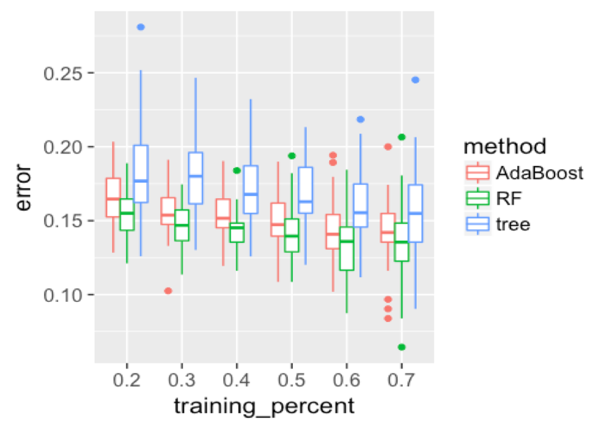 Figure 132: Boxplots of the classification error rates for single decision tree, random forest, and AdaBoost
theme_set(theme_gray(base_size = 15))
library(randomForest)
library(gbm)
library(rpart)
library(dplyr)
library(RCurl)
url <- paste0("https://raw.githubusercontent.com",
"/analyticsbook/book/main/data/AD.csv")
data <- read.csv(text=getURL(url))
rm_indx <- which(colnames(data) %in% c("ID", "TOTAL13",
"MMSCORE"))
data <- data[, -rm_indx]
data$DX_bl <- as.factor(data$DX_bl)
set.seed(1)
err.mat <- NULL
for (K in c(0.2, 0.3, 0.4, 0.5, 0.6, 0.7)) {
testing.indices <- NULL
for (i in 1:50) {
testing.indices <- rbind(testing.indices, sample(nrow(data),
floor((1 - K) * nrow(data))))
}
for (i in 1:nrow(testing.indices)) {
testing.ix <- testing.indices[i, ]
target.testing <- data$DX_bl[testing.ix]
tree <- rpart(DX_bl ~ ., data[-testing.ix, ])
pred <- predict(tree, data[testing.ix, ], type = "class")
error <- length(which(as.character(pred) !=
target.testing))/length(target.testing)
err.mat <- rbind(err.mat, c("tree", K, error))
rf <- randomForest(DX_bl ~ ., data[-testing.ix, ])
pred <- predict(rf, data[testing.ix, ])
error <- length(which(as.character(pred) !=
target.testing))/length(target.testing)
err.mat <- rbind(err.mat, c("RF", K, error))
data1 <- data
data1$DX_bl <- as.numeric(as.character(data1$DX_bl))
boost <- gbm(DX_bl ~ ., data = data1[-testing.ix, ],
dist = "adaboost",interaction.depth = 6,
n.tree = 2000) #cv.folds = 5,
# best.iter <- gbm.perf(boost,method='cv')
pred <- predict(boost, data1[testing.ix, ], n.tree = 2000,
type = "response") # best.iter n.tree = 400,
pred[pred > 0.5] <- 1
pred[pred <= 0.5] <- 0
error <- length(which(as.character(pred) !=
target.testing))/length(target.testing)
err.mat <- rbind(err.mat, c("AdaBoost", K, error))
}
}
err.mat <- as.data.frame(err.mat)
colnames(err.mat) <- c("method", "training_percent", "error")
err.mat <- err.mat %>% mutate(training_percent =
as.numeric(as.character(training_percent)), error =
as.numeric(as.character(error)))
ggplot() + geom_boxplot(data = err.mat %>%
mutate(training_percent = as.factor(training_percent)),
aes(y = error, x = training_percent,
color = method)) + geom_point(size = 3)Figure 132 shows that the decision tree is less accurate than the other two ensemble methods. The random forest has lower error rates than AdaBoost in general. As the training data size increases, the gap between random forest and AdaBoost decreases. This may indicate that when the training data size is small, the random forest is more stable due to its advantage of addressing the statistical issue. Overall, all models become better as the percentage of the training data increases.
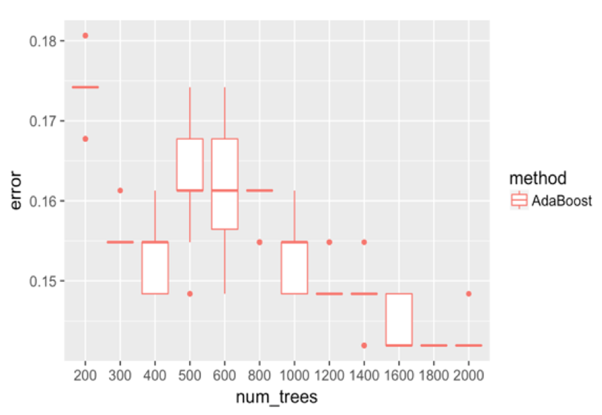 Figure 133: Boxplots of the classification error rates for AdaBoost with a different number of trees
We adjust the number of trees in AdaBoost and show the results in Figure 133. It can be seen that the error rates first go down as the number of trees increases to \(400\). Then the error rates increase, and decrease again. The unstable relationship between the error rates with the number of trees of AdaBoost indicates that AdaBoost is impacted by some particularity of the dataset and seems less robust than random forest.
err.mat <- NULL
set.seed(1)
for (i in 1:nrow(testing.indices)) {
data1 <- data
data1$DX_bl <- as.numeric(as.character(data1$DX_bl))
ntree.v <- c(200, 300, 400, 500, 600, 800, 1000, 1200,
1400, 1600, 1800, 2000)
for (j in ntree.v) {
boost <- gbm(DX_bl ~ ., data = data1[-testing.ix, ],
dist = "adaboost", interaction.depth = 6,
n.tree = j)
# best.iter <- gbm.perf(boost,method='cv')
pred <- predict(boost, data1[testing.ix, ], n.tree = j,
type = "response")
pred[pred > 0.5] <- 1
pred[pred <= 0.5] <- 0
error <- length(which(as.character(pred) !=
target.testing))/length(target.testing)
err.mat <- rbind(err.mat, c("AdaBoost", j, error))
}
}
err.mat <- as.data.frame(err.mat)
colnames(err.mat) <- c("method", "num_trees", "error")
err.mat <- err.mat %>%
mutate(num_trees = as.numeric(as.character(num_trees)),
error = as.numeric(as.character(error)))
ggplot() + geom_boxplot(data = err.mat %>%
mutate(num_trees = as.factor(num_trees)),
aes(y = error, x = num_trees, color = method)) +
geom_point(size = 3)We repeat the experiment on random forest and show the result in Figure 134. Similar to AdaBoost, when the number of trees is small, the random forest has higher error rates. Then, the error rates decrease as more trees are added. And the error rates become stable when more trees are added. The random forest handles the statistical issue better than the AdaBoost.
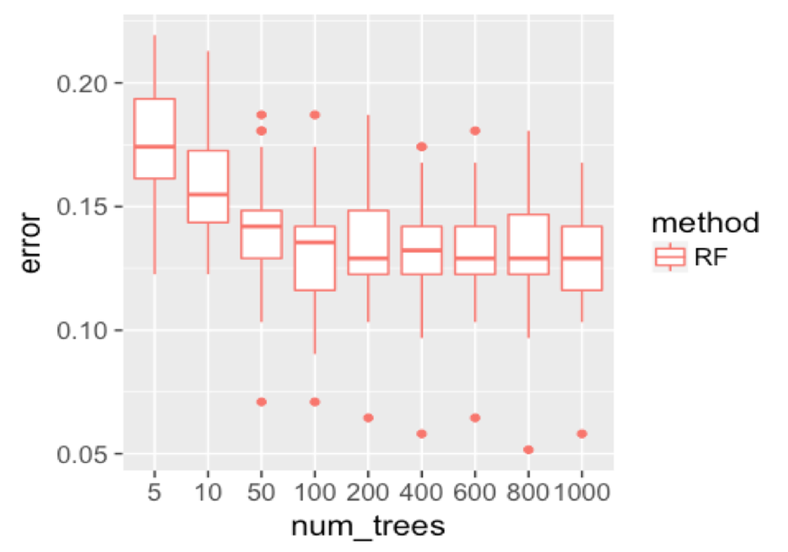 Figure 134: Boxplots of the classification error rates for random forests with a different number of trees
err.mat <- NULL
set.seed(1)
for (i in 1:nrow(testing.indices)) {
testing.ix <- testing.indices[i, ]
target.testing <- data$DX_bl[testing.ix]
ntree.v <- c(5, 10, 50, 100, 200, 400, 600, 800, 1000)
for (j in ntree.v) {
rf <- randomForest(DX_bl ~ ., data[-testing.ix, ], ntree = j)
pred <- predict(rf, data[testing.ix, ])
error <- length(which(as.character(pred) !=
target.testing))/length(target.testing)
err.mat <- rbind(err.mat, c("RF", j, error))
}
}
err.mat <- as.data.frame(err.mat)
colnames(err.mat) <- c("method", "num_trees", "error")
err.mat <- err.mat %>% mutate(num_trees =
as.numeric(as.character(num_trees)),
error = as.numeric(as.character(error)))
ggplot() + geom_boxplot(data =
err.mat %>% mutate(num_trees = as.factor(num_trees)),
aes(y = error, x = num_trees, color = method)) +
geom_point(size = 3)Building on the result shown in Figure 134, we pursue a further study of the behavior of random forest. Recall that, in random forest, there are two approaches to increase diversity, one is to Bootstrap samples for each tree, while another is to conduct random feature selection for splitting each node.
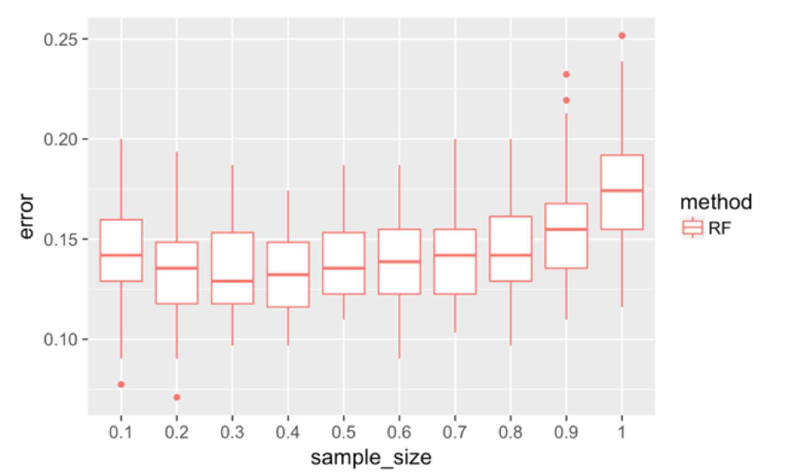 Figure 135: Boxplots of the classification error rates for random forest with a different sample sizes
First, we investigate the effectiveness of the use of Bootstrap. We change the sampling strategy from sampling with replacement to sampling without replacement and change the sampling size196 The sampling size is the sample size of the Bootstrapped dataset. from \(10\%\) to \(100\%\). The number of features tested at each node is kept at the default value, i.e., \(\sqrt{p}\), where \(p\) is the number of features. Figure 135 shows that the increased sample size has an impact on the error rates.
err.mat <- NULL
set.seed(1)
for (i in 1:nrow(testing.indices)) {
testing.ix <- testing.indices[i, ]
target.testing <- data$DX_bl[testing.ix]
sample.size.v <- seq(0.1, 1, by = 0.1)
for (j in sample.size.v) {
sample.size <- floor(nrow(data[-testing.ix, ]) * j)
rf <- randomForest(DX_bl ~ ., data[-testing.ix, ],
sampsize = sample.size,
replace = FALSE)
pred <- predict(rf, data[testing.ix, ])
error <- length(which(as.character(pred) !=
target.testing))/length(target.testing)
err.mat <- rbind(err.mat, c("RF", j, error))
}
}
err.mat <- as.data.frame(err.mat)
colnames(err.mat) <- c("method", "sample_size", "error")
err.mat <- err.mat %>% mutate(sample_size =
as.numeric(as.character(sample_size)),
error = as.numeric(as.character(error)))
ggplot() + geom_boxplot(data = err.mat %>%
mutate(sample_size = as.factor(sample_size)),
aes(y = error, x = sample_size,color = method)) +
geom_point(size = 3)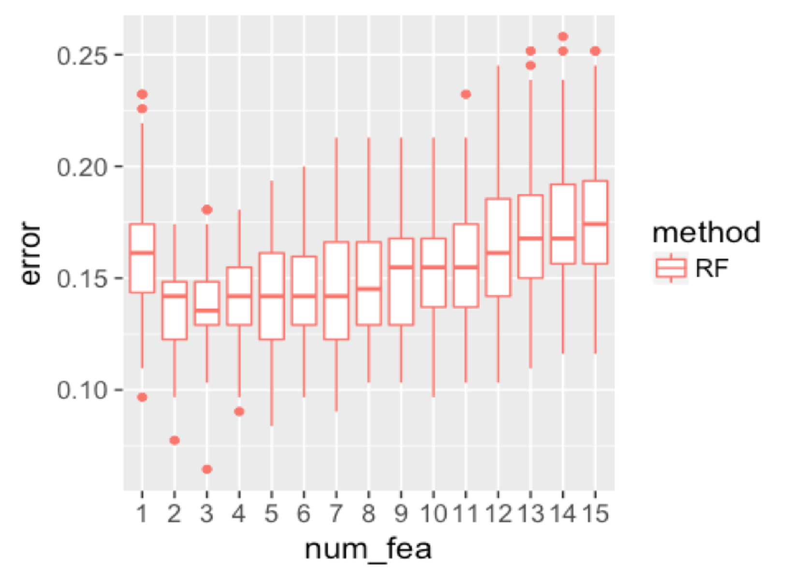 Figure 136: Boxplots of the classification error rates for random forest with a different number of features
We then investigate the effectiveness of using random selection of features for node splitting. We fix the sampling size to be the same size as the original dataset, and change the number of features to be selected. Results are shown in Figure 136. When the number of features reaches \(11\), the error rate starts to increase. This is probably because of the loss of the diversity of the trees, i.e., the more features to be used, the less randomness is introduced into the trees.
err.mat <- NULL
set.seed(1)
for (i in 1:nrow(testing.indices)) {
testing.ix <- testing.indices[i, ]
target.testing <- data$DX_bl[testing.ix]
num.fea.v <- 1:(ncol(data) - 1)
for (j in num.fea.v) {
sample.size <- nrow(data[-testing.ix, ])
rf <- randomForest(DX_bl ~ ., data[-testing.ix, ],
mtry = j, sampsize = sample.size,
replace = FALSE)
pred <- predict(rf, data[testing.ix, ])
error <- length(which(as.character(pred) !=
target.testing))/length(target.testing)
err.mat <- rbind(err.mat, c("RF", j, error))
}
}
err.mat <- as.data.frame(err.mat)
colnames(err.mat) <- c("method", "num_fea", "error")
err.mat <- err.mat %>% mutate(num_fea
= as.numeric(as.character(num_fea)),
error = as.numeric(as.character(error)))
ggplot() + geom_boxplot(data =
err.mat %>% mutate(num_fea = as.factor(num_fea)),
aes(y = error, x = num_fea, color = method)) +
geom_point(size = 3)In the preface of his seminar book197 Vapnik, V., The Nature of Statistical Learning Theory, Springer, 2000., Vladimir Vapnik wrote that “…during the last few years at different computer science conferences, I heard reiteration of the following claim: ‘Complex theories do not work, simple algorithms do’…this is not true…Nothing is more practical than a good theory….” He created the concept of VC dimension to specifically characterize his concept of the complexity of a model.
A model is often perceived to be complex. The SVM model looks more complex than the linear regression model. It asks us to characterize the margin using model parameters, write the optimization formulation, learn the trick of kernel function, and understand the support vectors and the slack variables for the nonseparable case. But, don’t forget that the reason for a model to look simple is probably only because this model may presuppose stronger conditions, too strong that we forget they are assumptions.
It is fair to say that a model is more complex if it provides more capacity to represent the statistical phenomena in the training data. In other words, a more complex model is more flexible to respond to subtle patterns in the data by adjusting itself. In this sense, SVM with kernel functions is a complex model since it can model nonlinearity in the data. But on the other hand, comparing the SVM model with other linear models as shown in Figure 137, it is hard to tell that the SVM model is simpler, but it is clear that it is more stubborn; because of its pursuit of maximum margin, it ends up with one model only. If you are looking for an example of an idea that is radical and conservative, flexible and disciplined, this is it.
Figure 137: (Left) some other linear models; (b) the SVM model
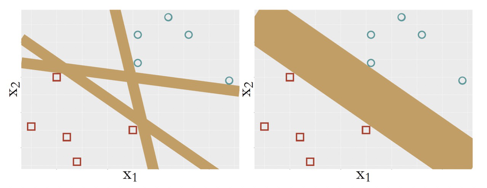Another interesting fact about SVM is that, when it was developed, it was named “support vector network”198 Cortes, C. and Vapnik, V., Support-vector networks, Machine Learning, Volume 20, Issue 3, Pages 273–297, 1995.. In other words, it has a connection with the artificial neural network that will be discussed in Chapter 10. This is revealed in Figure 138. Readers who know neural network models are encouraged to write up the mathematical model of the SVM model following the neural network format as shown in Figure 138.
Figure 138: SVM as a neural network model
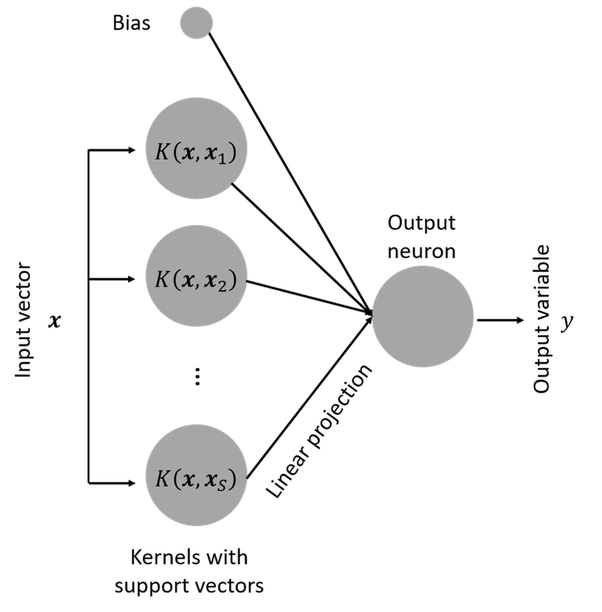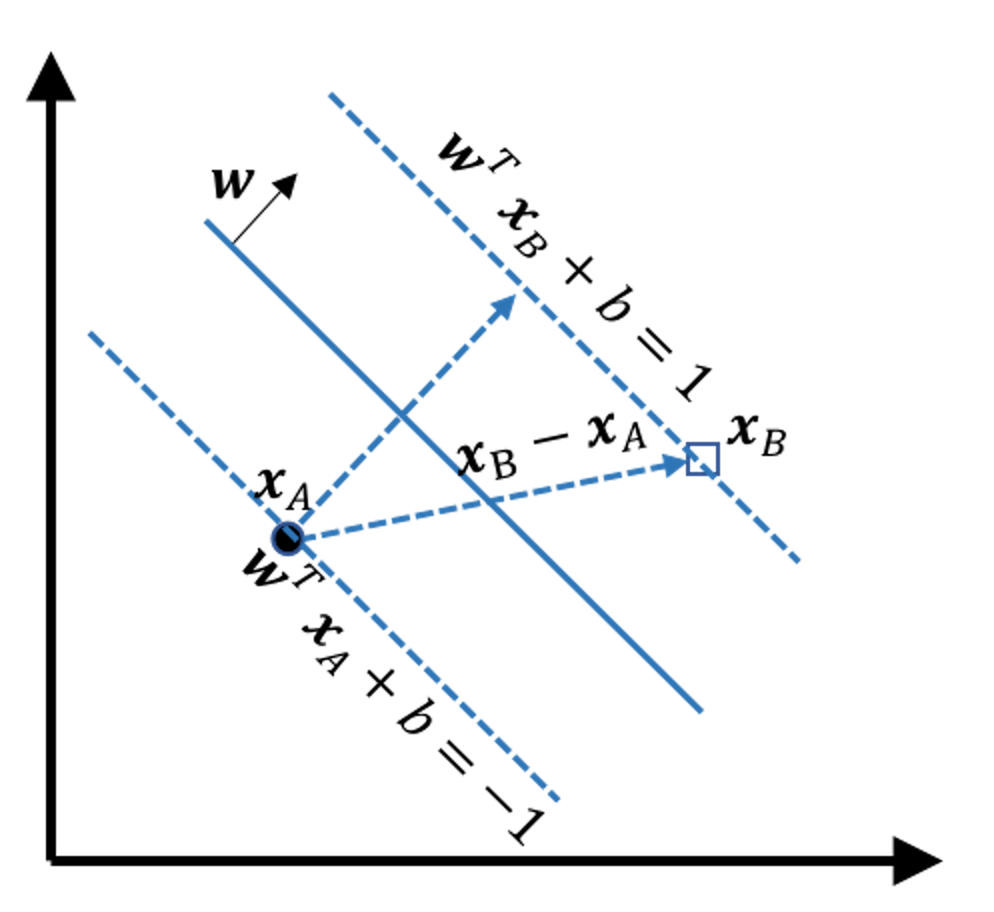 Figure 139: Illustration of how to derive the margin
Consider any two points on the two margins, e.g., the \(\boldsymbol{x}_A\) and \(\boldsymbol{x}_B\) in Figure 139. The margin width is equal to the projection of the vector \(\overrightarrow{A B} = \boldsymbol{x}_B - \boldsymbol{x}_A\) on the direction \(\boldsymbol{w}\), which is
\[\begin{equation} \small \text{margin } = \frac{ (\boldsymbol{x}_B - \boldsymbol{x}_A) \cdot \vec{\boldsymbol{w}}}{\|\boldsymbol{w}\|}. \tag{81} \end{equation}\]
It is known that
\[\begin{equation*} \small \boldsymbol{w}^{T} \boldsymbol{x}_B + b =1, \end{equation*}\]
and
\[\begin{equation*} \small \boldsymbol{w}^{T} \boldsymbol{x}_A + b = -1. \end{equation*}\]
Thus, Eq. (81) is rewritten as
\[\begin{equation} \small \text{margin } = \frac{2}{\|\boldsymbol{w}\|}. \tag{82} \end{equation}\]
Theoretically, to understand why the nonzero \(\alpha_n\) are the support vectors, we can use the Karush–Kuhn–Tucker (KKT) conditions199 Bertsekas, D., Nonlinear Programming: 3rd Edition, Athena Scientific, 2016.. Based on the complementary slackness as one of the KKT conditions, the following equations must hold
\[\begin{equation*} \small \alpha_{n}\left[y_{n}\left(\boldsymbol{w}^{T} \boldsymbol{x}_{n}+b\right)-1\right]=0 \text {, for } n=1,2, \dots, N. \end{equation*}\]
Thus, for any data point \(\boldsymbol{x}_n\), it is either
\[\begin{equation*} \small \alpha_{n} = 0 \text {, and } y_{n}\left(\boldsymbol{w}^{T} \boldsymbol{x}_{n}+b\right)-1 \neq 0; \end{equation*}\]
or
\[\begin{equation*} \small \alpha_{n} \neq 0 \text {, and } y_{n}\left(\boldsymbol{w}^{T} \boldsymbol{x}_{n}+b\right)-1 = 0. \end{equation*}\]
Revisiting Eq. (58) or Figure 119, we know that only the support vectors have \(\alpha_{n} \neq 0\) and \(y_{n}\left(\boldsymbol{w}^{T} \boldsymbol{x}_{n}+b\right)-1 = 0\).
The specifics of the AdaBoost algorithm shown in Figure 126 are described below.
Input: \(N\) data points, \(\left(\boldsymbol{x}_{1}, y_{1}\right),\left(\boldsymbol{x}_{2}, y_{2}\right), \ldots,\left(\boldsymbol{x}_{N}, y_{N}\right)\).
Initialization: Initialize equal weights for all data points \[\begin{equation*} \small \boldsymbol{w}_{0}=\left(\frac{1}{N}, \ldots, \frac{1}{N}\right). \end{equation*}\]
At iteration \(t\):
Step 1: Build model \(h_t\) on the dataset with weights \(\boldsymbol{w}_{t-1}\).
Step 2: Calculate errors using \(h_t\) \[\begin{equation*} \small \epsilon_{t}=\sum_{n=1}^{N} w_{t, n}\left\{h_{t}\left(x_{n}\right) \neq y_{n}\right\}. \end{equation*}\]
Step 3: Update weights of the data points \[\begin{equation*} \small \boldsymbol{w}_{t+1, i}=\frac{w_{t, i}}{Z_{t}} \times \left\{\begin{array}{c}{e^{-\alpha_{t}} \text { if } h_{t}\left(x_{n}\right)=y_{n}} \\ {e^{\alpha_{t}} \text { if } h_{t}\left(x_{n}\right) \neq y_{n}}.\end{array} \right. \end{equation*}\] Here, \[\begin{equation*} \small Z_{t} \text { is a normalization factor so that } \sum_{n=1}^{N} w_{t+1, n}=1, \end{equation*}\] and \[\begin{equation*} \small \alpha_{t}=\frac{1}{2} \ln \left(\frac{1-\epsilon_{t}}{\epsilon_{t}}\right). \end{equation*}\]
Iterations: Repeat Step 1 to Step 3 for \(T\) times, to get \(h_1\), \(h_2\), \(h_3\), \(\ldots\), \(h_T\).
Output: \[\begin{equation*} \small H(x)=\operatorname{sign}\left(\sum_{t=1}^{T} \alpha_{t} h_{t}(x)\right). \end{equation*}\]
When all the base models are trained, the aggregation of these models in predicting on a data instance \(\boldsymbol{x}\) is a weighted sum of base models
\[\begin{equation*} \small h(\boldsymbol{x})=\sum_{i} \gamma_{i} h_{i}(\boldsymbol{x}), \end{equation*}\]
where the weight \(\gamma_{i}\) is proportional to the accuracy of \(h_{i}(x)\) on the training dataset.
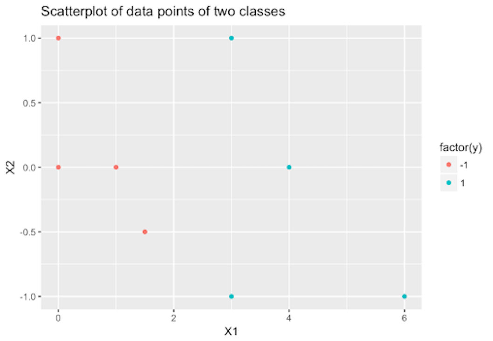 Figure 140: How many support vectors are needed?
1. To build a linear SVM on the data shown in Figure 140, how many support vectors are needed (use visual inspection)?
2. Let’s consider the dataset in Table 32. Please (a) draw scatterplots and identify the support vectors if you’d like to build a linear SVM classifier; (b) manually derive the alpha values (i.e., the \(\alpha_i\)) for the support vectors and the offset parameter \(b\); (c) derive the weight vector (i.e., the \(\hat{\boldsymbol{w}}\)) of the SVM model; and (d) predict on the new dataset and fill in the column of \(y\) in Table 33.
Table 32: Dataset for building a SVM model in Q2
| ID | \(x_1\) | \(x_2\) | \(x_3\) | \(y\) |
|---|---|---|---|---|
| \(1\) | \(4\) | \(1\) | \(1\) | \(1\) |
| \(2\) | \(4\) | \(-1\) | \(0\) | \(1\) |
| \(3\) | \(8\) | \(2\) | \(1\) | \(1\) |
| \(4\) | \(-2.5\) | \(0\) | \(0\) | \(-1\) |
| \(5\) | \(0\) | \(1\) | \(1\) | \(-1\) |
| \(6\) | \(-0.3\) | \(-1\) | \(0\) | \(-1\) |
| \(7\) | \(2.5\) | \(-1\) | \(1\) | \(-1\) |
| \(8\) | \(-1\) | \(1\) | \(0\) | \(-1\) |
Table 33: Test data points for the SVM model in Q2
| ID | \(x_1\) | \(x_2\) | \(x_3\) | \(y\) |
|---|---|---|---|---|
| \(9\) | \(5.4\) | \(1.2\) | \(2\) | |
| \(10\) | \(1.5\) | \(-2\) | \(3\) | |
| \(11\) | \(-3.4\) | \(1\) | \(-2\) | |
| \(12\) | \(-2.2\) | \(-1\) | \(-4\) |
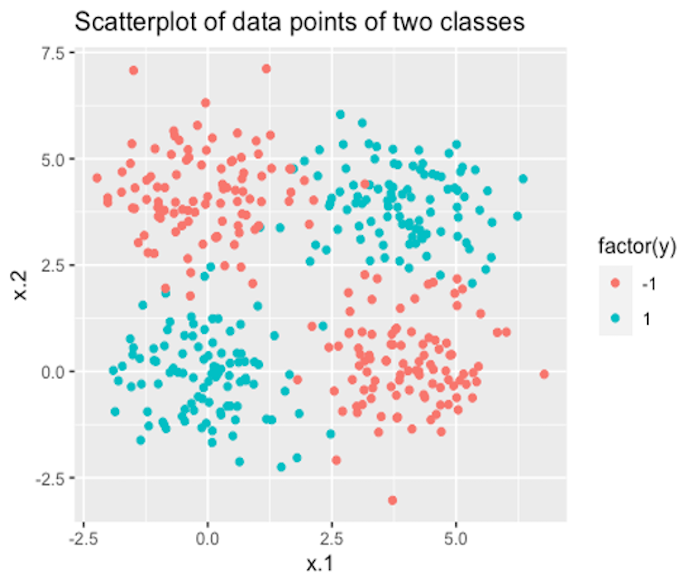 Figure 141: A dataset with two classes
3. Follow up on the dataset used in Q2. Use the R pipeline for SVM on this data. Compare the alpha values (i.e., the \(\alpha_i\)), the offset parameter \(b\), and the weight vector (i.e., the \(\hat{\boldsymbol{w}}\)) from R and the result by your manual calculation in Q2.
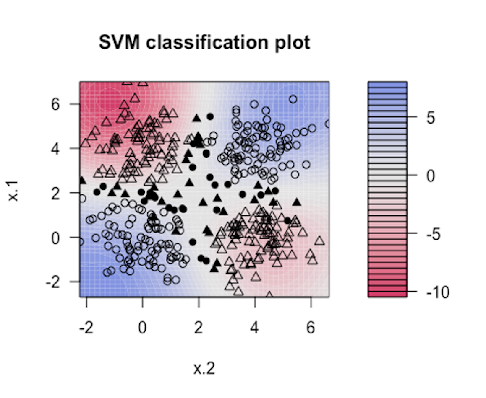 Figure 142: Visualization of the decision boundary of an SVM model with Gaussian kernel
4. Modify the R pipeline for Bootstrap and incorporate the glm package to write your own version of ensemble learning that ensembles a set of logistic regression models. Test it using the same data that has been used in the R lab for logistic regression models.
5. Use the dataset PimaIndiansDiabetes2 in the mlbench R package, run the R SVM pipeline on it, and summarize your findings.
6. Use R to generate a dataset with two classes as shown in Figure 141. Then, run SVM model with a properly selected kernel function on this dataset.
7. Follow up on the dataset generated in Q6. Try visualizing the decision boundaries by different kernel functions such as linear, Laplace, Gaussian, and polynomial kernel functions. Below is one example using Gaussian kernel with its bandiwidth parameter \(\gamma = 0.2\).200 In the following R code, the bandiwidth parameter is specified as sigma=0.2. Result is shown in Figure 142. The blackened points are support vectors, and the contour reflects the characteristics of the decision boundary.
The R code for generating Figure 142 is shown below.
Please follow this example and visualize linear, Laplace, Gaussian, and polynomial kernel functions with different parameter values.
require( 'kernlab' )
rbf.svm <- ksvm(y ~ ., data=data, type='C-svc', kernel='rbfdot',
kpar=list(sigma=0.2), C=100, scale=c())
plot(rbf.svm, data=data)